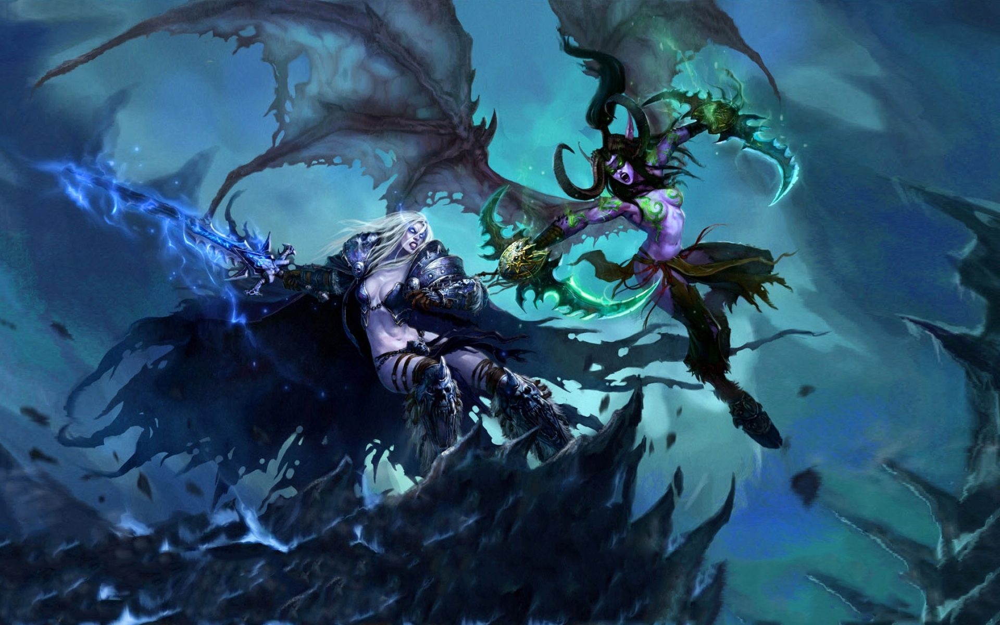

World of Warcraft (prescurtat WoW) este un Massively Multiplayer Online Role-Playing game (MMORPG) creat de Blizzard Entertainment. Este al patrulea joc din seria Warcraft, excluzând expansion pack-urile și Warcraft Adventures: Lord of the Clans. Jocurile Warcraft sunt situate într-un univers numit Warcraft, o lume fantastică introdusă de jocul Warcraft: Orcs and Humans în 1994. World of Warcraft este situat în Azeroth, patru ani după evenimentele concluzionate în Warcraft III: The Frozen Throne.
Deși la început jocul a fost încetinit de probleme de stabilitate si performanță, a devenit rapid cel mai popular MMORPG bazat pe plată lunară. In 2008 Blizzard Entertainment a anunțat că numărul de jucători activi, care plătesc "la zi", a trecut de 11,5 milioane. In ianuarie 2014, a fost anuntat ca peste 100 de milioane de conturi au fost create de cand jocul este activ.
Gameplay: Ca în majoritatea RPG-urilor, jucătorii controlează un personaj creat de ei într-o lume în continuă dezvoltare, explorând relieful, ducând la îndeplinire misiuni (questuri) date de NPC-uri (Non-playable characters - personaje controlate de calculator), ucigând monștri, și facând multe altele. Personajele sunt răsplătite cu bani, obiecte (iteme) și experiență, care le ajută dându-le mai multă putere și posibilitatea de a învăța abilități noi. De asemenea, jucătorii se pot lupta cu alți jucători în dueluri sau războaie împotriva facțiunii inamice.
Jocul World of Warcraft, necesită din partea jucătorilor plata unui abonament lunar pentru a beneficia de întreg conținutul jocului și pentru ca jucătorul să poată activa pe serverele Blizzard. Abonamentele lunare se pot procura fie cu un card de credit, fie prin alte metode uzuale. Jucătorii care nu dețin un abonament lunar, pot să acceseze jocul, însă vor fi limitați pana la nivelul 20 al caracterului.
Monștrii și quest-urile de nivel mic și mediu pot fi de obicei cucerite fără ajutorul altor jucători, în special dacă nivelul jucătorului este mai mare deacât al inamicilor. Alte părți ale jocului, precum "temnițele" (Dungeon) sunt create special pentru a necesita cooperarea mai multor jucători în scopul de a termina dungeon-ul. De obicei, cele mai ușoare necesită o echipă de aproximativ 5 jucători pentru ca "raidul" să poată fi dus la capăt, iar ultimele pot necesita 25 pâna la maxim 40 de jucători. Cele mai grele pot fi terminate de mai multe ghilde (guilds) în luni de timp de joc și multe încercări.
Limita de nivel a fost ridicată la 90 odată cu lansarea expansion-ului "Mists of Pandaria" in 2012 după care limita de nivel a fost ridicată din nou la 100, odată cu lansarea expansion-ului Warlords of Draenor în anul 2014. Odată cu lansarea expansion-ului Legion, in anul 2016, limita de nivel a crescut la 110. Obiectivele jucătorilor la acest nivel se schimbă, de obicei în creșterea puterii personajelor prin echipamente mai bune. Cu puține excepții, cele mai bune echipamente din joc sunt obținute fie prin PvP (Player versus Player, lupte între jucători), fie prin PvE, lupta pe termen lung în cele mai grele raiduri. Dungeon-urile mari iau de obicei câteva ore pentru a fi terminate. Din cauza puterii uriașe a monștrilor din cele mai grele dungeon-uri, de obicei personajele poartă armură specializată împotriva elementului monștrilor din dungeon-ul respectiv.
Statisticile oficiale spun ca există peste 10.000 de jucători români de WOW (World Of Warcraft) oficial inregistrați pe serverele WOW.